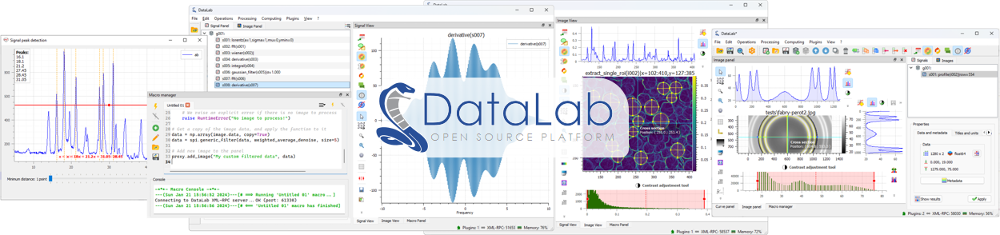

DataLab#
DataLab is an open-source platform for signal and image processing and visualization for research, education and industry. Leveraging the richness of the scientific Python ecosystem [1], DataLab is the ideal complement to your data analysis workflows as it can be extended with your Python code through Plugins or directly from your IDE or your Jupyter notebooks. Go to Installation to get started!
DataLab-Web – the browser-native edition (no install)
DataLab-Web is the browser-native edition of the platform: the full feature set runs inside your browser tab – no install, and your data never leaves your machine.
Try it now: datalab-platform.com/web
Learn more about the DataLab Platform and its editions in the ecosystem overview.
Want to know more?
See our Tutorials –
Try DataLab online, without installation:  .
.

Signal and image visualization in DataLab#
What is DataLab used for? A few examples, with real data and step-by-step tutorials:
Baseline correction and peak fitting
Beam profiling and interferograms
Automated defect detection
Start with DataLab: Getting started – installation, tutorials and first use cases.
Explore the documentation: Features · Contributing · Talks & events
DataLab has been funded, chronologically, by the following stakeholders:
|
CEA, the French Alternative Energies and Atomic Energy Commission, is the major investor in DataLab, and is the main contributor to the project. |
|
CODRA, a software engineering and editor firm, has supported DataLab open-source journey since its inception (see here). |
|
NLnet Foundation, as part of the NGI0 Commons Fund, backed by the European Commission, has funded the redesign of DataLab’s core architecture. |


DataLab is powered by PlotPyStack, the scientific Python-Qt visualization and graphical user interface stack.#
DataLab processing features are based on Sigima, the open-source signal and image processing library (part of the DataLab Platform).#
Note
This project (DataLab Platform) should not be confused with the datalab-org project, which is a separate and unrelated initiative focused on materials science databases and computational tools.
Footnotes